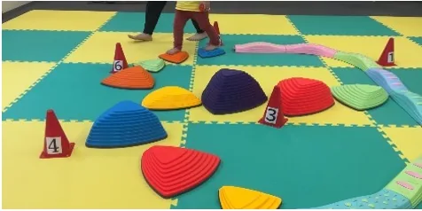

STAR FIELD
よくある質問
利用前に多い疑問を、保護者・関係機関の方にも分かりやすくまとめました。

見学できますか。
見学可否、日時、見学方法は施設ごとに異なります。希望施設を選んでお問い合わせください。
送迎はありますか。
送迎の有無、範囲、時間は施設・サービスにより異なります。施設ごとの条件は要確認です。
受給者証は必要ですか。
児童発達支援・放課後等デイサービスなどでは必要になる場合があります。自治体により手続きが異なります。
対象年齢を知りたいです。
児童発達支援は未就園児〜未就学児、放課後等デイサービスは小学1年生〜小学6年生が主な対象です。日中一時支援などは施設により対象が異なるため、施設詳細ページをご確認ください。
利用料金はどのくらいですか。
制度や世帯状況、サービス内容により異なります。具体的な金額は要確認です。
利用開始までどれくらいかかりますか。
見学、面談、手続き、契約の状況により異なります。お急ぎの場合もまずはご相談ください。
保育園との併用はできますか。
サービスや自治体の制度により異なるため、個別に確認が必要です。
公表資料はどこで確認できますか。
公表資料・評価結果ページに施設別の確認導線を整理しています。最新URLは要確認です。
問い合わせ先に迷った場合は？
本部または対象施設へご連絡ください。内容に応じて窓口を確認します。
採用応募はどこからできますか。
採用情報ページをご確認ください。募集状況や応募フォームの詳細は要確認です。
Contact
相談先に迷ったら、本部または各施設へご相談ください
対象や利用条件はサービス・施設により異なります。希望する事業・施設を確認のうえお問い合わせください。